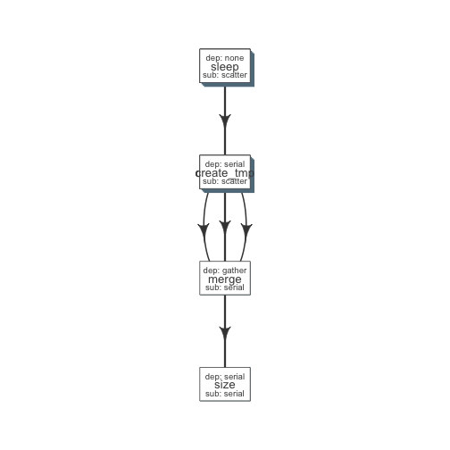

Example1¶
read_chunk(system.file('pipelines', 'sleep_pipe.R', package = 'flowr'))
Define modules¶
#' @param x number of sleep commands
sleep <- function(x, samplename){
cmd = list(sleep = sprintf("sleep %s && sleep %s;echo 'hello'",
abs(round(rnorm(x)*10, 0)),
abs(round(rnorm(x)*10, 0))))
flowmat = to_flowmat(cmd, samplename)
return(list(flowmat = flowmat))
}
#' @param x number of tmp commands
create_tmp <- function(x, samplename){
## Create 100 temporary files
tmp = sprintf("%s_tmp_%s", samplename, 1:x)
cmd = list(create_tmp = sprintf("head -c 100000 /dev/urandom > %s", tmp))
## --- convert the list into a data.frame
flowmat = to_flowmat(cmd, samplename)
return(list(flowmat = flowmat, outfiles = tmp))
}
#' @param x vector of files to merge
merge_size <- function(x, samplename){
## Merge them according to samples, 10 each
mergedfile = paste0(samplename, "_merged")
cmd_merge <- sprintf("cat %s > %s",
paste(x, collapse = " "), ## input files
mergedfile)
## get the size of merged files
cmd_size = sprintf("du -sh %s; echo 'MY shell:' $SHELL", mergedfile)
cmd = list(merge = cmd_merge, size = cmd_size)
## --- convert the list into a data.frame
flowmat = to_flowmat(cmd, samplename)
return(list(flowmat = flowmat, outfiles = mergedfile))
}
Define the pipeline¶
#' @param x number of files to make
sleep_pipe <- function(x = 3, samplename = "samp1"){
## call the modules one by one...
out_sleep = sleep(x, samplename)
out_create_tmp = create_tmp(x, samplename)
out_merge_size = merge_size(out_create_tmp$outfiles, samplename)
## row bind all the commands
flowmat = rbind(out_sleep$flowmat,
out_create_tmp$flowmat,
out_merge_size$flowmat)
return(list(flowmat = flowmat, outfiles = out_merge_size$outfiles))
}
Generate flowmat¶
out = sleep_pipe(x = 3, "sample1")
flowmat = out$flowmat
kable(flowmat)
| samplename | jobname | cmd |
|---|---|---|
| sample1 | sleep | sleep 20 && sleep 7;echo ‘hello’ |
| sample1 | sleep | sleep 7 && sleep 8;echo ‘hello’ |
| sample1 | sleep | sleep 15 && sleep 3;echo ‘hello’ |
| sample1 | create_tmp | head -c 100000 /dev/urandom > sample1_tmp_1 |
| sample1 | create_tmp | head -c 100000 /dev/urandom > sample1_tmp_2 |
| sample1 | create_tmp | head -c 100000 /dev/urandom > sample1_tmp_3 |
| sample1 | merge | cat sample1_tmp_1 sample1_tmp_2 sample1_tmp_3 > sample1_merged |
| sample1 | size | du -sh sample1_merged; echo ‘MY shell:’ $SHELL |
Create flow definition¶
We have a helper function which generates a skeleton flow_def¶
def = to_flowdef(flowmat)
#> Creating a skeleton flow definition
#> Following jobnames detected: sleep create_tmp merge size
kable(def)
| jobname | sub_type | prev_jobs | dep_type | queue | memory_reserved | walltime | cpu_reserved | platform | jobid |
|---|---|---|---|---|---|---|---|---|---|
| sleep | serial | none | none | short | 2000 | 1:00 | 1 | torque | 1 |
| create_tmp | serial | sleep | gather | short | 2000 | 1:00 | 1 | torque | 2 |
| merge | serial | create_tmp | gather | short | 2000 | 1:00 | 1 | torque | 3 |
| size | serial | merge | gather | short | 2000 | 1:00 | 1 | torque | 4 |
Default flowdef¶
plot_flow(to_flow(flowmat, def))

plot of chunk unnamed-chunk-4
By default the flowdef seems quite conservative.
Change the dependency type for merge step into gather¶
It might be easier to do such, by hand. In this example let do this in R itself.
def$sub_type = c("scatter", "scatter", "serial", "serial")
def$dep_type = c("none", "serial", "gather", "serial")
kable(def)
| jobname | sub_type | prev_jobs | dep_type | queue | memory_reserved | walltime | cpu_reserved | platform | jobid |
|---|---|---|---|---|---|---|---|---|---|
| sleep | scatter | none | none | short | 2000 | 1:00 | 1 | torque | 1 |
| create_tmp | scatter | sleep | serial | short | 2000 | 1:00 | 1 | torque | 2 |
| merge | serial | create_tmp | gather | short | 2000 | 1:00 | 1 | torque | 3 |
| size | serial | merge | serial | short | 2000 | 1:00 | 1 | torque | 4 |
Plot flow¶
Now this looke better.
- multiple sleep commands would run in parallel
- For each sleep, create_tmp creates a file
- All tmp files are merged; when all are complete: gather
- Then we get size on the resulting file
plot_flow(to_flow(flowmat, def))

plot of chunk unnamed-chunk-6